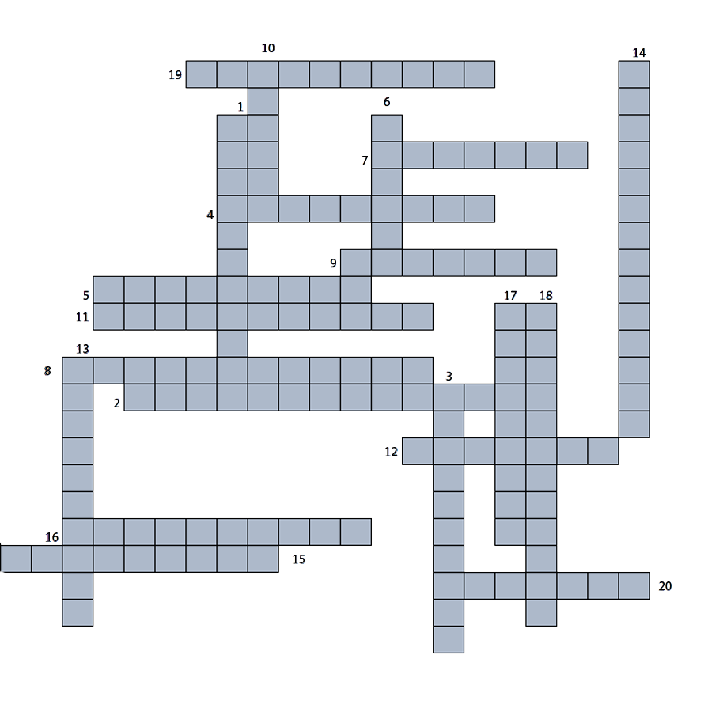

- Ciencia que estudia y justifica un lenguaje
- ¿ Que movimiento cultural se origino en Alemania?
- ¿ Que estudia la extructura interna de las palabras?
- Estudia las reglas y principios que gobiernan el uso de las palabras en la oracion
- ¿ Quien retoma el interes por por el lenguaje retorico y critico?
- ¿ Quien fue maestro de Aristoteles?
- ¿ La interacción comunicativa es un signo de?
- La presición y claridad de un lenguaje
- No es usal en un contexto general
- Conjunto de razgos y reglas gramaticales
- Uno de los padres de la filosofia
- Indana, investiga y analiza
- Primeros en reconocer, separar la lingúística y filosofia
- En la su epoca se crean institutos de enseñanza
- Nivel de gramataica intenzos en la
- Aquí enseñaban la gramatica
- La interpretación de un signo lingüístico
- Movimiento cultural del siglo XIX
- Lengua romance
- Filosofo griego